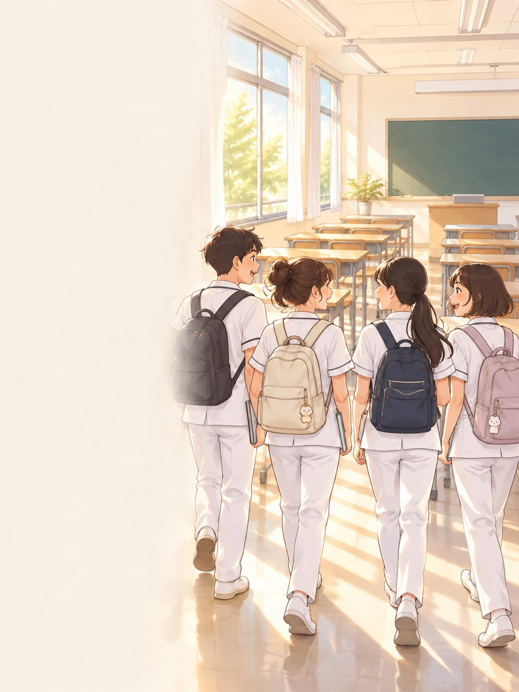
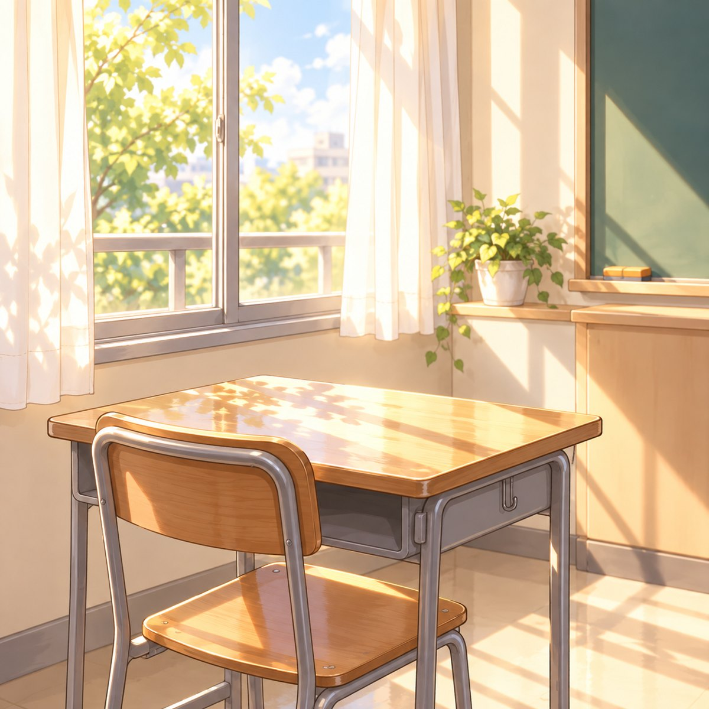
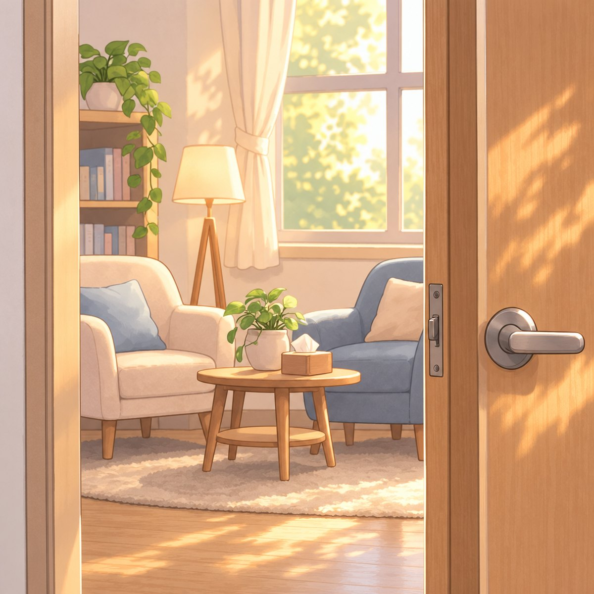

護理科 科週會・三年級
共用的空間
共處的關係
教室是大家共用的空間，
同學是彼此共處的環境
今天想和大家聊兩件事

第一件
共用的空間
跑班、選修課的時候，我們都在使用別人的教室
第二件
共處的關係
每天一起上課的同學，就是我們相處的環境
兩件事其實是同一件事：我們怎麼對待彼此。
跑班／選修課 教室使用生活公約
1 桌椅務必歸位
2 垃圾隨手帶走
「去哪一班都一樣，請把整潔與秩序留給原班級！」
離開教室前，只要做兩件事
你怎麼對待別人的教室，
別人就怎麼對待我們的教室。
自省時間
接下來 3 分鐘，留給自己
🔒
完全匿名
不問姓名、班級、座號，老師也看不出是誰填的
⏱️
6 題，約 3 分鐘
沒有標準答案，請照實際的自己回答
拿出手機，掃描 QR Code
🔒 完全匿名・不問姓名、班級、座號・送出後會看到給你的回饋
共處的關係
能同班，
是一種緣份
這麼多人裡，我們剛好在同一個班、同一間教室，一起走過這五年。
畢業後，大家會走向不同的地方。但一起練技術、一起熬過考試的這段日子，只有我們有。
好好對待身邊的同學，就是珍惜這份緣份。
旁觀的你，其實很有力量
群組裡有人被拿來開玩笑時，你不必公開出頭，也可以做點什麼：
不跟著回應
不按讚、不加表情符號，這本身就是一種表態
私下關心
私訊一句「還好嗎？」，讓他知道自己不是一個人
需要幫忙的時候
如果你最近在班上相處得不太開心，不用一個人撐著。

輔導室
[輔導室位置・開放時間]
這週，
試試你選的一小步
大家分享的好做法，會在會後整理公布，
不會出現任何人的名字。
珍惜同窗的緣份，
從好好對待我們共用的空間開始。